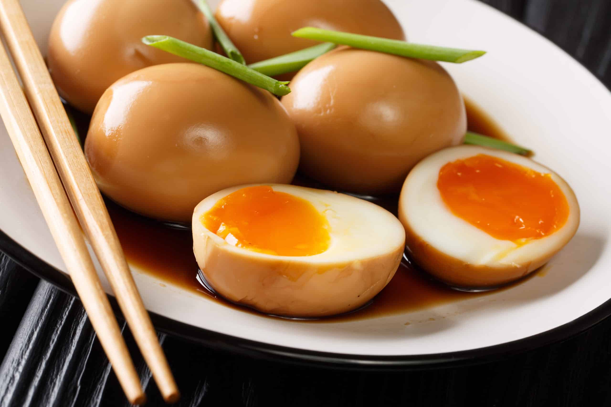

#24 - MARINATED SOFT BOILED EGG (JAPANESE STYLE) - 糖心蛋
I had this this egg when I ate at Japanese ramen noodles restaurants and loved it. The soft tender texture and the semi-solidified yolk is similar to the Shanghainese smoked egg. It is a nice addition to a bowl of soup noodle.

INGREDIENTS:
- 6 eggs at room temperature
Marinade:
- ½ tsp dark soy sauce
- 1 TBSP Sake/cooking wine
- 5 TBSP light soy sauce
- 5 TBSP water
- 2 TBSP sugar
- 2 TBSP Mirin
Directions:
- Poke the fat end of the egg with a needle to make small hole. (This will prevent the egg from cracking when boiling)
- Boil a pot of water that will be able to cover all the eggs.
- When the water boils, lower the eggs gently into the boiling water with a spoon. Careful not to crack the eggs.
- Let it boil for 6 min.
- Remove all eggs from the boiling water and put them in ice water to cool down.
- Mix the marinade in a storage box just big enough to hold the eggs in one single layer.
- Peel the eggs shell and soak eggs in the marinade sauce for 1 day before use.
- Consume in 5 days.
Note:
- Mirin is a sweet Japanese cooking wine. If not available, substitute with 2 TSBP sake and 1 tsp sugar.
- You may vary doneness of the egg yolk by increasing or decreasing the cooking time. Usually it varies from 5-7 minutes depending on the size of the pot and the amount of water used.
(Serves 1 person)
Note:
- A pinch is third of ¼ tsp, which is about ½ mil. Therefore, it is just the slightest amount that you pinch between two fingers.
- If you buy the fresh Ho Fen noodle, but not cook this dish the same day. You should shake loose the noodle, before putting into the refrigerator. Otherwise, the noodle will stick together and hard to separate when hardens.